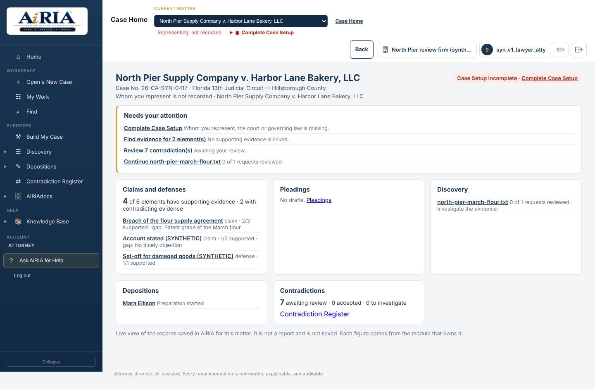

Set the matter
Record the parties, represented side, court and governing framework in Case Setup. Use Case Home and My Work to find the next task.
How AiRIA works
AiRIA creates attorney-directed continuity from first-pass evidence review through the practical work of active litigation.
Record the parties, represented side, court and governing framework in Case Setup. Use Case Home and My Work to find the next task.
Add case documents, emails, attachments, transcripts and scans through Case Files. Preserve originals and establish consistent source references.
Ask a factual question in Find, inspect its coverage and source passages, then use Add to Evidence to preserve what matters.
Connect Evidence to claims, defenses and elements in Build My Case. Review the chronology, contrary material, contradictions and proof gaps.
Carry the work into Discovery, Depositions or Pleadings. Refine questions, responses and allegations with the source available for review.
Record the necessary approvals, export the work and retain its traceability. Keep discovery dates and outstanding work visible, with AiRIAdocs supporting the firm’s records lifecycle.
Attorney Driven at every stage
Reuse verified factual work instead of rebuilding it for each task.
Examine evidence in relation to the complete matter, not in isolation.
Keep sources accessible as lawyers test and refine the work.
The journey is connected, not one-way. A new document can change an allegation. A witness answer can expose a proof gap. A contradiction can call for another discovery request. Return to the relevant source, update the case and carry the revised understanding forward without starting again. Reusable legal playbooks guide recurring tasks while carrying the matter context, evidence and review decisions with them.
The result is a coherent case record: the important findings, their sources, what they support, what remains disputed and the work prepared from them. Move from the overall picture back to the underlying document whenever you need to test it.

Private demonstrations now available
See one matter from evidence to work product. Ask for a demonstration of Find, Build My Case, Discovery, Depositions, Pleadings and AiRIAdocs. Follow a source through the workflow and see how the team’s work stays connected.
Consult with an AiRIA Expert